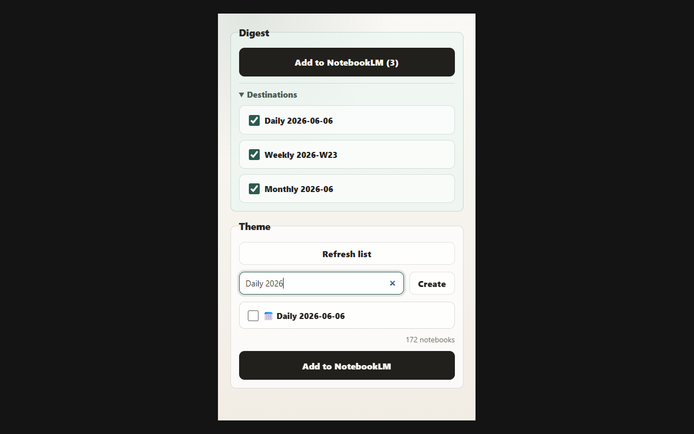

Save
Add the current page to a daily, weekly, monthly, or theme notebook.
Listen first. Ask later.
「あとで読む」は読まれない。まず聴き、つぎに問う。
Read Later Is Broken sends the current page to your NotebookLM notebooks, so unread pages become sources you can revisit through Deep Dives and follow-up questions.
This project is not affiliated with Google or NotebookLM.
Saving a page often feels like progress, but most saved pages quietly become another unread pile. Read Later Is Broken changes the destination: not a list you promise to read someday, but a NotebookLM source you can listen to and ask about.
The extension does not automatically generate Deep Dives. It adds the page as a NotebookLM source, then leaves the next step to you. Generate an audio overview only when the notebook is worth listening to.
DeepReading is not just reading later. It is a workflow: save the page, listen to the Deep Dive, then ask follow-up questions when something matters.
Add the current page to a daily, weekly, monthly, or theme notebook.
Open NotebookLM and generate a Deep Dive when the source is worth your attention.
Use NotebookLM to question the source after you already know what to ask.
Use digest notebooks for broad review, or theme notebooks for deeper research.
Add the current page to Daily, Weekly, and Monthly notebooks with fixed ISO-style names.
Search your NotebookLM notebook list, keep the last selected notebooks checked, and add the current page only to those topics.
The add job continues in the background, so the popup can be closed while NotebookLM finishes processing.
Put Chrome Web Store and GitHub Pages screenshots in
docs/assets/screenshots/, then replace these placeholders.

Your unread pile does not have to stay unread. Put pages where they can become sources for listening, summarizing, and asking.